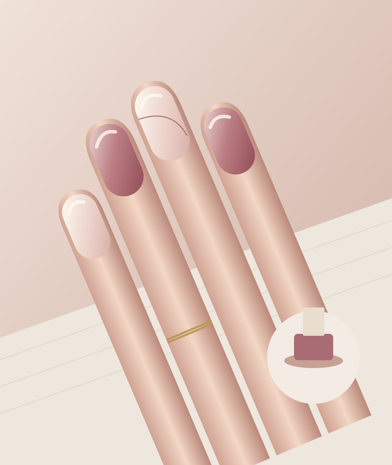

Make space.
Explore a service and artist in our local planner. This demonstration does not make appointments.
Nail studio · London · Est. 2018
A calm, considered nail studio in the heart of the city. No rushed appointments. No shortcuts. Just precise, lasting work and a space to breathe.
PRECISE BY NATURE. PERSONAL BY DESIGN.

Considered preparation. Beautiful finishes. Explore the sample service menu, then build your visit below.
12 original nail-art illustrations. Select a study to see its finish and inspiration.
Explore a service and artist in our local planner. This demonstration does not make appointments.
Shape, length, finish, inspiration. A conversation before the first brushstroke.
A considered approach to preparation, precise application and finishing touches.
Ask a qualified technician about maintenance and suitable removal for your nails.
Illustrative studio menu. Removal included with manicure appointments where required.
Gel manicure £38
BIAB set £52
Pedicure £50
Soak-off £20
Gel manicure £48
BIAB set £62
Art per nail from £5
Pedicure £60
Acrylic full set £75
Custom full set from £85
Editorial / press sets POA
Events & bridal POA
Complexity agreed in consultation.
Illustrative studio team profiles from the brief.
Seoul and London influences. Minimal nail art, BIAB and press-on construction.
Nail art / BIAB / Press-ons
A fashion-styling perspective and a precise, deeply calm approach to French manicures.
French / Gel / Acrylics
Painterly detail, sculpted gels and three-dimensional floral work.
3D art / Sculpted gel / Editorial
Build an example visit. Sample prices and dates only: no live availability, booking, payment or message is sent.
MON–SAT / 9AM–7PM / LAST VISIT 6PM
A little clarity before your visit.
This static preview offers a local visit planner only. Connect a verified booking platform before accepting appointments.
The brief suggests 3–4 weeks; individual wear varies. This demonstration offers no treatment or durability guarantee.
The sample menu includes a 30-minute soak-off for £20, with removal included in manicure pricing where required.
Yes — bring a reference to discuss shape, colour and complexity with your chosen artist.
The proposed studio policy asks for 24 hours’ notice. No appointment or cancellation fee is created here.
The Artist menu includes event concepts priced on consultation. No group enquiry is transmitted in this preview.